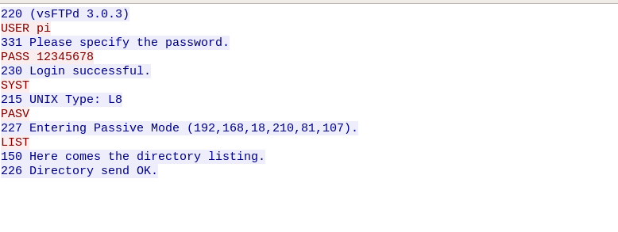

Redes
Docker
¿Que es Docker?
Docker es un subsistema de virtualización que comparte con el anfitrión el kernel y el sistema de archiv os. El anfitrión siempre es un sistema L inux. Si estamos en Windows o Mac , necesitaré una máquina virtual Linux virtualizada con VirtualBox o similar.
Un software de máquinas virtuales necesita instalar el S.O completo.
Ejemplos de sistemas de virtualización:
- VirtualBox(Multiples plataformas)
- Parallel(Only MAC)
- Hyper-V(Only Windows)
- VMWare(Multiples plataformas)
- QEMU(Only Linux)
- XVM(Only UNIX/Linux
- XEN(Only UNIX/Linux
Un SoftWare de contenedores es un sistema de virtualización que comparte el kernel con
el anfitrión. Se basa en el concepto de micr oservicio, donde tengo todos los programas
instalados, configu rados y funcionando, gracias a los contenedores.
Ejemplo de SoftWare de contenedores:
- Docker
- LXD
- Kubernetes
Docker Vs Maquinas Virtuales


Para saber mas sobre el tema
Web Oficial de Docker
DockerHub (Listado de contenedores)
Tutorial de Docker
EJEMPLO DOCKERFILE m,m# use phusion/baseimage as base image. from ubuntu:latest # use baseimage-docker's init system. cmd ["/sbin/my_init"] # install prerequisites run apt-get update; \ apt-get install -y udhcpd # set up start up scripts run mkdir /etc/service/udhcpd add udhcpd.sh /etc/service/udhcpd/run run chmod +x /etc/service/udhcpd/run # clean up apt when done. run apt-get clean && rm -rf /var/lib/apt/lists/* /tmp/* /var/tmp/* # expose the port expose 67 expose 67/udp expose 68 expose 68/udp # volumes volume /data Raw Document
QUE ES UN DOCKERFILE? Un dockerfile es una receta para crear una imagen para una aplicación particular de docker. de este modo podemos tomar una imagen base, instalarle programas, configurar esos programas y dejarla preparada para crear contenedores a partir de ella Comando from: Buscas la imagen mas reciente de ubuntu con ubuntu:latest Comando run: Ejecutas y añades scrip para actualizar el sistema e instalar udhcp Comando expose: Abres los puertos 67 y 68 Comando volume: Comparte una carpeta entre el contenedor de docker y el host CREAMOS EL ARCHIVO udhcpd.conf # The start and end of the IP lease block start 172.17.0.200 end 172.17.0.210 # The interface that udhcpd will use interface eth0 opt dns 192.168.18.3 8.8.8.8 option subnet 255.255.0.0 opt router 172.17.0.1 # opt wins 192.168.10.10 # option dns 129.219.13.81 # appended to above DNS servers for a total of 3 option domain local option lease 864000 CREAR EL CONTENEDOR: docker build . LANZAR EL CONTENEDOR: docker run -d --net=host -p 67:67 -p 67:67/udp -p 68:68 -p 68:68/udp --name=dhcpd -v "RUTA AL DIRECTORIO udhcpd"/data ubuntu:latest ABRIR TERMINAL EN CONTENEDOR: docker exec -ti NOMBRE_CONTENEDOR /bin/bash
SSH
FTP
EN PROGRESO
Instala el servidor vsftpd en la Raspberry Pi con que tenga las siguientes caracteristicas:
- Que sea un servidor FTP anónimo para descargas.
-
Que sea un servidor FTP para usuarios de sistema y que puedan tanto
descargar como subir archivos.

-
Funcione en modo pasivo.

-
Habilita los logs.

-
Cambia el mensaje de bienvenida.
Pantallazos:
Logs de acceso al servidor FTP.


Pantallazo
que demuestre que se ha cambiado el mensaje de bienvenida.
Pantallazo del WireShark que demuestre que esta funcionando en modo pasivo.
